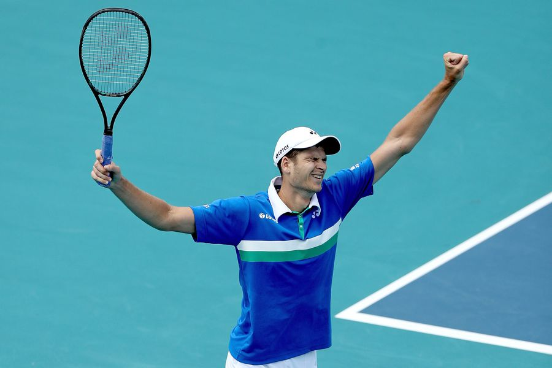

Hurkacz domina a Sinner y gana su
primer Masters 1000 en Miami
Tenis

Hubert Hurkacz (37°) levanta el
título más importante de su carrera en Miami. Llegó como
un actor secundario y terminó ganando su primer Masters
1000 tras vencer a un errático Sinner (31°) por 7-6(4)
y 6-4. En un torneo atípico pero legendario, el polaco
hace historia.
Los nervios le jugaron una mala pasada a Jannik Sinner, favorito de esta peculiar definición. El italiano, de 19 años, copó las portadas de los medios internacionales con su deslumbrante paso por Florida, no por nada era el finalista más joven del certamen desde que Rafael Nadal perdiera el torneo en 2005.
Pero hoy ese juego sereno, preciso y punzante no apareció. Muy dubitativo con su servicio, el itálico siempre tuvo que remar de atrás y pese a que tuvo chances de darlo vuelta en el primer set, terminó jugando un juego para el olvido cuando estaba 6-5 arriba.
Hurkacz por su parte es campeón trabajando de manera silenciosa, sin la atención que rodeaba al que es uno de los jugadores jóvenes más interesantes del circuito, pero con la tenacidad y valía de sus grandes victorias en el Hard Rock Stadium. Le ganó a Rublev (8°), Tsitsipas (5°) y Shapovalov (11°), algunas de las caras más poderosas del quinto grande, por lo que la confianza del número 37 del mundo estaba a tope.
Los nervios le jugaron una mala pasada a Jannik Sinner, favorito de esta peculiar definición. El italiano, de 19 años, copó las portadas de los medios internacionales con su deslumbrante paso por Florida, no por nada era el finalista más joven del certamen desde que Rafael Nadal perdiera el torneo en 2005.
Pero hoy ese juego sereno, preciso y punzante no apareció. Muy dubitativo con su servicio, el itálico siempre tuvo que remar de atrás y pese a que tuvo chances de darlo vuelta en el primer set, terminó jugando un juego para el olvido cuando estaba 6-5 arriba.
Hurkacz por su parte es campeón trabajando de manera silenciosa, sin la atención que rodeaba al que es uno de los jugadores jóvenes más interesantes del circuito, pero con la tenacidad y valía de sus grandes victorias en el Hard Rock Stadium. Le ganó a Rublev (8°), Tsitsipas (5°) y Shapovalov (11°), algunas de las caras más poderosas del quinto grande, por lo que la confianza del número 37 del mundo estaba a tope.